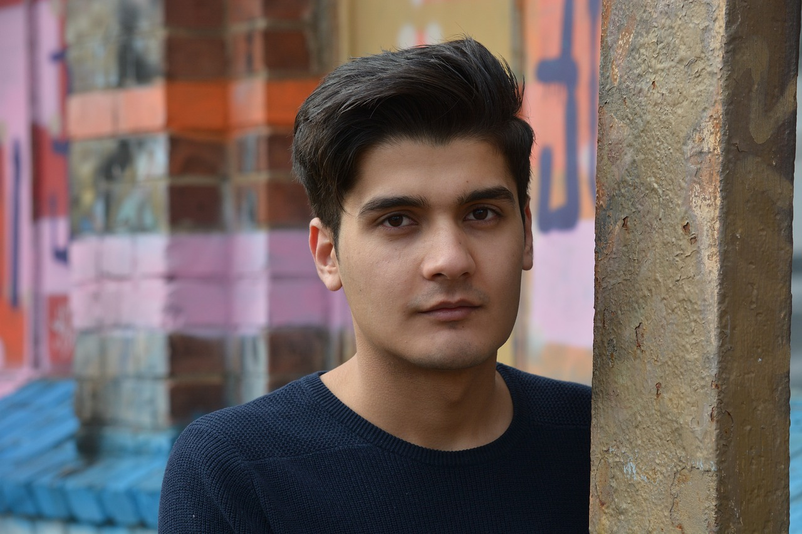

Welcome to the official page dedicated to Olim Hadashim, a resilient individual whose journey as a refugee has brought him to a new chapter of life filled with challenges and uncertainties. Here, we invite you to learn more about Olim's needs and aspirations and join us in extending a helping hand to make a positive impact on his journey.
In the heart of a world marked by upheaval, we meet Olim Hadashim, a resilient soul navigating the intricate paths of life as a refugee. Born in the fictional city of Qalb Al-Amal, Olim's journey unfolds against the backdrop of adversity and the pursuit of hope.